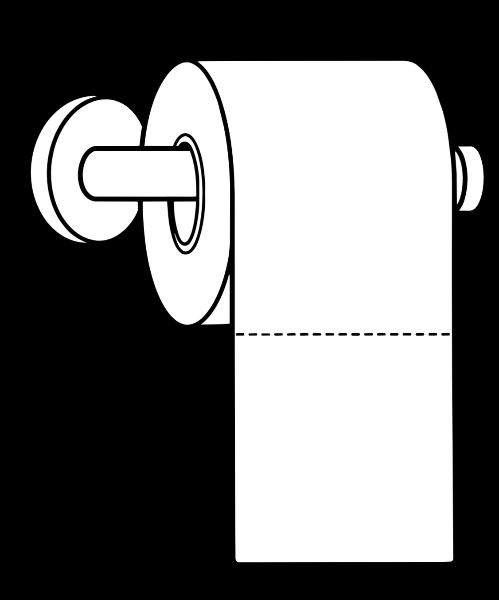

September is the month for Blood Cancer and Pediatric Cancer Awareness!
We invite you to stop by!
The NMDP will be popping up on the UC Berkeley Campus on Monday, September 21st from 10am–12pm PT outside of the Amazon Hub Locker.
Directions
We invite you to stop by!
The NMDP will be popping up on the UC Berkeley Campus on Monday, September 21st from 10am–12pm PT outside of the Amazon Hub Locker.
DirectionsSomeone in the U.S. is diagnosed with a blood cancer or disorder.
NMDP connects patients with volunteer blood stem cell donors who may be their best chance for a cure.
Donated cells can begin making new blood cells to replace damaged ones and help restore blood and immune systems.
Join the registry
More registry diversity gives more patients a better chance.
Monday, September 21
10 AM–12 PM PT
2495 Bancroft Way